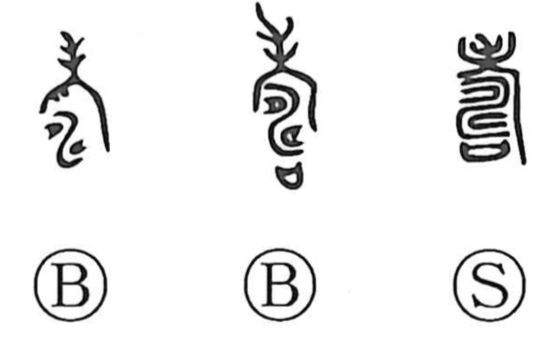

寿

Kun: kotobuki, kotohogu | On: ju
longevity ・ long life ・ congratulations ・ to congratulate
Explanation
This character is a phono-semantic graph. At its heart lies an older figure of prayer: a ritual in which a covenant vessel (sai) holding written appeals to the gods was set among the furrows of a field as one prayed for an abundant harvest. That primal image later appears with the altar sign 示 to form 禱 “to pray.” 寿 blends a reduced element of 老 “elder” with this prayer motif to express praying for a person’s long life; from that, it comes to mean longevity itself, life continuing for a long time, and by extension the words of felicitation offered on such occasions. Bronze inscriptions voice the wish succinctly in the formula 眉壽萬年, “May you enjoy longevity for ten thousand years.”